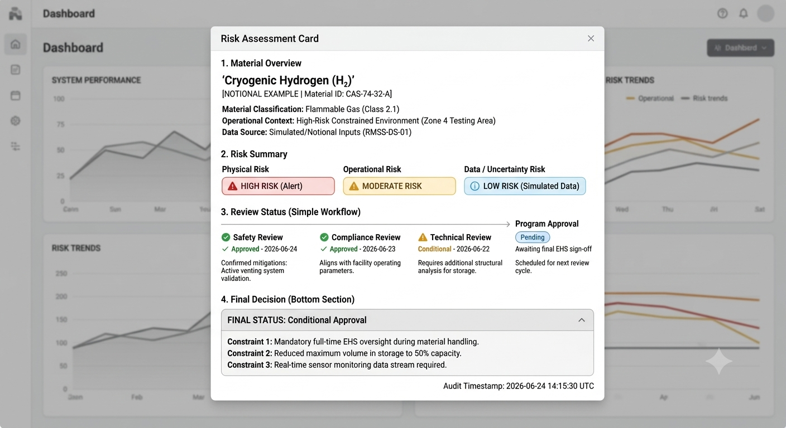
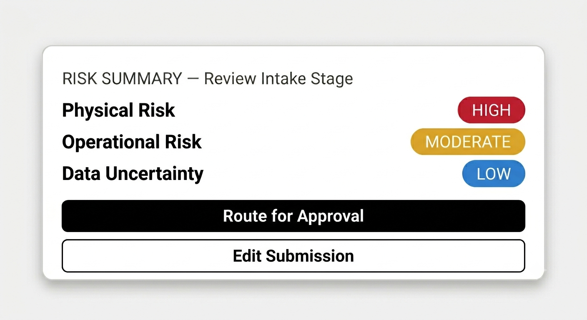

Systems & Compliance Design (APL Work)
Work conducted in a high-constraint research environment focused on structured workflows, decision systems, and auditable information transformation pipelines. Artifacts are reconstructed for portfolio clarity.
Systems UX · High-constraint environments · Structured decision design
Geospatial Workflow System
Designed a structured workflow for transforming static geospatial inputs into interactive, navigable artifacts through a multi-stage transformation pipeline.

Static spatial inputs → transformation pipeline → structured interactive output
Focused on reducing ambiguity in how spatial datasets were organized, processed, and interpreted across downstream use.
Decision Intake & Risk Evaluation System
Designed a structured intake system for evaluating high-constraint inputs through staged review logic.

Risk signals → structured synthesis → review-ready decision state
The interface reduced cognitive load by consolidating multi-variable inputs into a single structured decision view.
Conditional logic enabled progressive disclosure, reducing unnecessary input burden while preserving required evaluation fields.
Visualization & Systemization Layer
A shared visualization layer was introduced to standardize how structured outputs were represented across geospatial and decision systems.

This layer defined consistent rules for project risk states, and structured outputs.
Outcome: reduced lead time for consensus on risk level and decision making.
Design Constraints
Both systems were designed under strict constraints:
• Structured and auditable information flows
• Multi-stage decision workflows
• Cognitive load reduction in high-complexity environments
Outcome
Across both systems, the primary impact was improved clarity of structured workflows and reduced procedural friction.
The work emphasized transforming complex inputs into structured, reviewable outputs that supported consistent downstream interpretation.